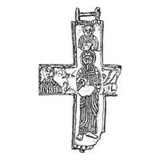

Catalog › CE-0859 · KOR2003-II.2.1.2
Valvă de revers de encolpion cu Hristos în picioare binecuvântând și sfinți pe jumătate, restaurată din fragmente
sec. XII (1101–1200) · Gorodeț, regiunea Nijni Novgorod, Rusia · Muzeul regional de istorie locală Gorodeț (GRM), inv. ГРМ 3622
single valve of a reliquary cross, aramă; c. XII (1101–1200); found at Gorodeț, regiunea Nijni Novgorod, Rusia; kept at Muzeul regional de istorie locală Gorodeț (GRM).


Identificare
- Categorie
- Valvă izolată
- Material
- Aramă
- Tehnică
- Turnare în relief; Gravare (incizie)
- Stare
- Fragmentară
- Dimensiuni
- Î 95 × L 60 mm
Iconografie
- Revers
- Neidentificat
- Descriere revers
- Valvă găsită în patru fragmente foarte corodate, fără metal, din oxizi metalizați; forma și imaginile au putut fi stabilite numai după curățire și restaurare. Brațe drepte, ușor lărgite; se păstrează trei capete ale crucii. Valva este goală, suprafața interioară netedă. Imaginile în relief, cu liniile veșmintelor retușate cu dalta; pe margine bordură dreaptă. Imaginea centrală: Hristos în picioare, în veșminte strânse pe corp cu falduri paralele subțiri, mâna dreaptă binecuvântătoare în fața pieptului, stânga ținând la piept un codex. Pe capătul de sus și pe cele laterale păstrate, imagini de sfinți pe jumătate. De o parte și de alta a figurii centrale se văd litere trasate cu dalta, ilizibile din cauza stării proaste de conservare.
Datare și atribuire
- Datare
- sec. XII (1101–1200)
- Centru
- Necunoscut
- Tipologie
- Korzukhina–Peskova 2003, tip II 2 1
Descoperire
- Localitate
- Gorodeț
- Regiune
- regiunea Nijni Novgorod
- Țară
- Rusia
- Context
- Așezare
- Anul
- 1985
Păstrare și referințe
- Colecție
- Muzeul regional de istorie locală Gorodeț (GRM)
- Nr. inventar
- ГРМ 3622
- Bibliografie
- G. F. Korzukhina, A. A. Peskova, Древнерусские энколпионы. Нагрудные кресты-реликварии XI–XIII вв., Sankt-Petersburg, 2003 [Korzukhina–Peskova 2003], p. 84, cat. nr. II 2 1/2, reprodusă la Табл. 37 (planșe, p. 279). Bibliografie citată în sursă: Гусева 1989.
- Figura
- Табл. 37
- Planșe
- Korzukhina–Peskova 2003, Табл. 37 (planșă fără paginație proprie în PDF; p. 279 tipărită)
- Observații
- Datare după Peskova: sec. XII. Circumstanțe: Săpături 1985 conduse de T. V. Guseva în orașul înconjurător al Gorodeț (Radilov) pe Volga, pe podeaua unei construcții arse din sec. XII (cifru de teren Г-85 Р-II № 260/134). Dimensiuni: fragmentară; fără balamale 9,5×7,3 cm. Descoperire: turnare din sec. XII după un model kievean mai vechi (a doua pătrime a sec. XI) cu Hristos în picioare și sfinți pe jumătate sus (Gheorghe) și pe laturi (Elena și Constantin). Foto/desen: T. V. Guseva. Coordonate: nu sunt date în sursă.
Citare: Corpus Encolpiorum, CE-0859, Valvă de revers de encolpion cu Hristos în picioare binecuvântând și sfinți pe jumătate, restaurată din fragmente, https://vitaliejosanu1979-ux.github.io/primul-meu-proiect/piese/KOR2003-II.2.1.2/ (accesat 2026-10-17).